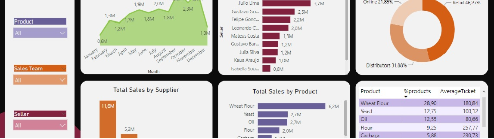

Summit Grocery Inc
Power BI project
In this Power BI project the objective was to answer some questions using data for Summit Grocery Inc. The questions were:
1. If revenue decreased from 2020 to 2021. The answer can be seen by clicking on the year in the "year" slicer and checking the "total sales" for each year. It is also possible to monitor the total sales by month through the "Total Sales by Month" table.
2. Who are the two sellers with the lowest sales. This question is answered by the "Total Sales by Seller" table.
3. What are the worst-selling products. This can be visualized in the "Total Sales by Product" table, and the percentage that each product represents of total sales and the average ticket price for each product can also be seen in the adjacent table.
It is also possible to visualize how sales are distributed among each sales team and the total sales value corresponding to products purchased from each supplier.
In this Business Intelligence project developed for Summit Grocery Inc, the goal was to explore the company's data to answer some crucial questions. Utilizing various Power BI tools and resources, this project allowed for interactive and efficient data visualization and analysis, gaining insights into their business operations to make informed decisions.
The main DAX functions used were:
TotalSale = SUMX(fSales, fSales[QtdItens]*fSales[PrecoUnitario])
GeneralTotal = CALCULATE([TotalSale], ALLSELECTED(fSales))
AverageTicket = DIVIDE([TotalSale],[QntSale])
Average = AVERAGEX(VALUES(dCalendar[Date].[Year]),[TotalSale])